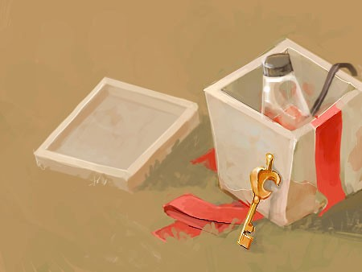
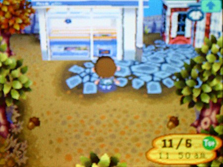
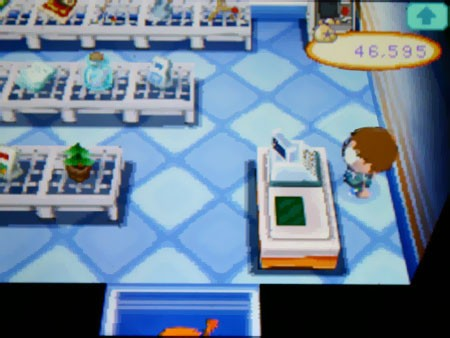
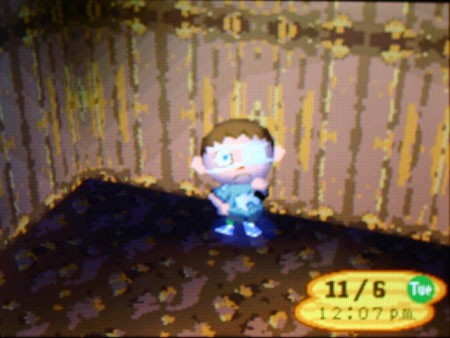
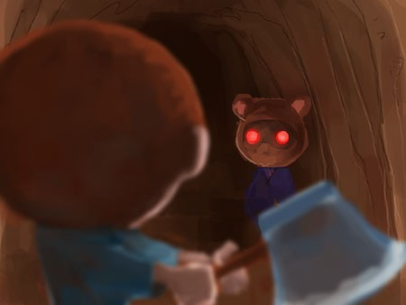
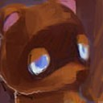
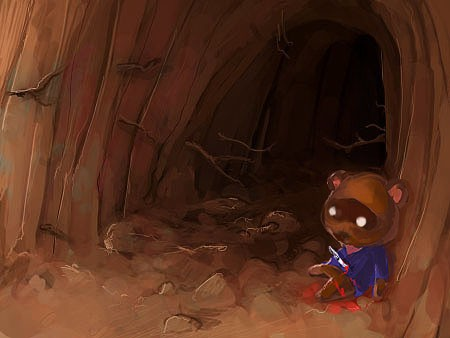
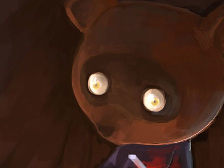
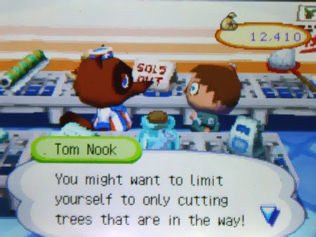

Я знаю, что не должен смотреть. В голове я спорил с самим собой: открыть или нет? Смогу ли я жить, так и не узнав, что там? Я думал об этом минут двадцать, но казалось, что прошло три дня. Даже в самых безумных фантазиях я не мог представить, что в этой коробке может быть что-то хорошее. Но я всего лишь человек, и тот, кто привязал её к шару, это знал.
Я осторожно заглядываю внутрь, ожидая, что единственный глаз подтвердит мои страхи: отрубленная рука, вырванный орган, целая ёбаная голова, которая смотрит на меня в упор. Сердце колотится, когда я разглядываю содержимое. Густая красная жижа покрывает дно, а в ней плавают какие-то пульсирующие куски. Адреналин ударил в кровь…
Я был в замешательстве.
Битое стекло? Чёрная металлическая рамка и шнур питания? Если бы я не знал лучше, я бы сказал, что кто-то положил сюда лавовую лампу, и она разбилась при падении. Это была лавовая лампа. Что? Это был последний подарок Пенни?
Подождите-ка. Чтобы шар не улетел, его нужно утяжелить. По наитию я начал ощупывать лавовую слизь, и мои пальцы наткнулись на что-то неожиданно тяжёлое и гладкое.

Это был ключ. И на нём был символ Нука. Бремя ожидаемого ужаса, которое я нёс в себе, чуть ослабло. Неужели Пенни всё ещё там, в плену, её пытают… стоп. Я должен сосредоточиться.
Так вот как Пенни попала в магазин той ночью. Интересно, как ей удалось его раздобыть. Прошло всего около недели, но казалось, что прошла целая вечность. К чёрту плот; я выбираю экспресс-маршрут. Я даже не знаю, как строить плот.
Это действительно был ключ Нука.

Был полдень, но Нук запер свою лавку наглухо, что было подозрительно, потому что я всё ещё не видел ни одного жителя в городке. Я отпер дверь, и она с привычным шорохом отъехала в сторону. Даже со светом, проникающим через окна, находиться в магазине Нука одному было жутко. Нервы звенели от мысли, что я иду в ловушку. Неужели звери-люди вырвутся из скрытых панелей, чтобы снова избить меня? Что-то подсказывало мне, что нет. Это не имело смысла. Что здесь вообще происходит?
Секретный проход нашёлся быстро.

Побродив пару минут, я додумался нажать на зелёный значок доллара на его кассе. Передо мной открылся маленький люк. Как нетипично.
Узкая лестница уходила в зловещую черноту. Если бы той ночью на месте Пенни был я, я бы развернулся и пошёл болтать с гироидами. Но я уже не был тем Билли. Мне было плевать на побег. Я хотел только одного — увидеть Пенни. А если это невозможно… я содрогнулся — я хотел увидеть кровь.
Я оглядел магазин и заметил, что сегодня Нук продаёт походный фонарь. Ловкость рук — и он мой. Повезло — он уже был с батарейками. Я включил его на максимум — света было мало. Я заглянул в люк, вниз, в мутную тьму.

Пахло сырой землёй и гниющими растениями. Снаружи палило солнце, и было странно оказаться в таком холоде. Туннель был коротким и грубым, стены усеяны корнями и дождевыми червями. Мои ладони вспотели. Я крепче сжал топор.
Я собирался узнать, как глубока эта кроличья нора.
Пришлось пройти не так далеко.

Животный страх сковал меня, но быстро сменился решимостью. Я был новым Билли. И это был подходящий момент — только я и он, бежать некуда. Он выглядел искренне удивлённым, увидев меня. Я встал в стойку напротив этого сукина сына, моего заклятого врага, виновника всех моих мук, сжимая дрожащий топор в руках.

Билли: Я УБЬЮ ТЕБЯ, НУК! Я ТЕБЯ УЖЕ НЕ БОЮСЬ!
Он не двигался. Просто стоял и смотрел мне в глаза. Я видел, как он колеблется, пытаясь что-то предпринять. Этот миг длился вечность. Наконец он ответил, и я увидел, как его плечи опустились, словно он сдался.

Нук: ...валяй. Я тебя не останавливаю.
Я шагнул вперёд, ожидая, что сейчас что-то произойдёт. Это должна была быть ловушка, но выбора не было. Ещё шаг — и я замахнулся, вложив в удар всю ярость восьмилетнего пацана, который дерётся за свою жизнь.
Тяжёлый топор вывел меня из равновесия, я врезался в стену, лезвие проскочило мимо и вонзилось в ногу Нука. Он рухнул на землю с пустым лицом. Из глубокой раны на бедре хлынула кровь, и у меня в животе всё перевернулось.
Билли: Пошёл ты нахуй! Пошёл ты нахуй! Что с тобой не так?
Нук: Давай, пацан. Добей меня.
Билли: НЕТ! Что ты сделал с Пенни?! Где она?!
Нук с трудом поднял голову, лоб блестел от пота. Было видно, что боль невыносимая. Он криво усмехнулся, но в этой усмешке была только горечь.
Нук: Ты был занозой в заднице с самого момента, как появился здесь, Билли. Забудь о Пенни, просто убирайся отсюда. Этот ключ от лодки на западной оконечности острова.
Билли: ПРОШУ ТЕБЯ!
Он тяжело вздохнул, как человек, который наконец отпустил последнее, что у него было. В слабом свете упавшего фонаря я видел его енотовые глаза — расширенные и устремлённые в пустоту. Дыхание становилось тяжелее.
Нук: Мы строили курорт. Половина рабочих свалила из-за этих грёбаных гироидов. Мы предлагали двойную зарплату тем, кто останется. И очень скоро они начали превращаться в зверей.
Билли: ГОВОРИ ПРЯМО! Просто скажи, где Пенни? Она обратилась? Ты её съел?
Нук: Заткнись, Билли. Просто заткнись или убей меня. Решать тебе.
У меня на глазах начали выступать слёзы. Слёзы, которые я считал навсегда потерянными.
Нук: Нас было больше сотни, и мы все потихоньку превращались в этих тварей. Когда переходишь грань, ты на время теряешь рассудок, Билли. Всё пошло по одному мохнатому месту. Мне пришлось запереть Кей Кея, потому что он нападал на всех подряд. «Повелитель мух» — слишком мягко сказано. Образовалось несколько банд, и мы вытворяли друг с другом страшные вещи за клочок земли… это было давно. Со временем память возвращается, но то, что ты натворил, остаётся с тобой навсегда.
Его глаза затянуло пеленой. Но вдруг он посмотрел прямо на меня — так, что я буквально физически почувствовал его взгляд.
Нук: Высказал ему пару ласковых, Билли.
Меня чуть не хватил удар. Я с трудом выдавил из себя слова — и поперхнулся.
Билли: ЛЖЕЦ!! Ты здесь главный! Ты управляешь всем! Ты просто хочешь держать детей здесь, пока они не обратятся, а потом ты нас ЖРЁШЬ, кусок дерьма! Я читал твои бумаги! Я читал твой ДНЕВНИК!
Нук: Жрать вас? Я думал, ты сообразительнее.
Билли:Что?
Нук: Отсюда не сбежать, Билли. Мы в сотнях миль от Японии. Острова нет ни на одной карте. Можешь попробовать — я надеюсь, у тебя получится. Я пытался. И посмотри, чем это закончилось…
Он постучал по стене — пластиковый стук. Я не замечал раньше. Под шерстью — пластик. И в голосе — усилие, с которым он выговаривает слова. Языка не было.
Нук: Я не главный, я просто управляю ячейками. Вначале они пытали новых детей, но я убедил их, что так будет легче. Я старался, чтобы вы чувствовали себя максимально комфортно. Большинство из них счастливы и достаточно глупы, чтобы не задумываться о том, что происходит… даже после того, как обратятся. Но иногда попадаются такие, как ты.
Этого не может быть; это очередная ёбаная ложь Нука! Он просто пытается сбить меня с толку, заставить сомневаться! После всего этого времени, как он смеет утверждать, что заботился о нас, пытался сделать нашу жизнь лучше? Мои нервы были на пределе.
Билли:Ты врёшь. Я не верю ни единому слову! Зачем тебе было притворяться Пенни?! Зачем ты отдал мне свой дневник? И зачем ты посылал мне эти противоречивые сигналы — сначала то жуткое письмо, а потом сунул туда свой ключ?!
Нук:Посмотри на меня, Билли. Посмотри на себя. Вот что бывает, когда пытаешься сбежать — они забирают у тебя часть тебя. Всё, что я могу тебе дать, — это надежду. Надежду на то, что есть кто-то ещё. Ты не замечал, что я только и делал, что тянул время? Пытался напугать тебя, чтобы ты не лез? Не давал тебе действовать? Признаюсь, я не ожидал, что ты додумаешься использовать шары, чтобы нанести карту. Этого не должно было случиться. Ты должен был уже обратиться. Тогда бы ты хотя бы смирился с тем, что застрял здесь. Я отправил тебе последнее письмо, чтобы напугать тебя и заставить всё бросить. Я дал тебе ключ — на случай, если у тебя всё-таки хватит духу. Я не врал, он мне больше не нужен. Честно, я не думал, что увижу тебя здесь.
Я начинал терять себя. Где-то глубоко внутри я чувствовал, что он не лжёт. Он истекал кровью прямо у меня на глазах, и ему было всё равно. Это отвечало на некоторые вопросы, которые грызли меня изнутри, но я старался их игнорировать… как такая маленькая девочка, как Пенни, могла вломиться в дом Нука и случайно найти его личные бумаги и дневник? Зачем ей было бежать обратно в свою клетку? Как ей удавалось каждый день отправлять посылки? Слёзы текли по моему лицу.
Билли:Ты хочешь сказать мне… Пенни никогда не существовало?
Нук:О, нет. Она то реальна.
Он, наверное, заметил шок у меня на лице. Нук опустил глаза и продолжил говорить.
Нук:Пенни заправляет всем этим цирком. Прости, пацан. Мне пришлось подписывать письма её именем — если бы их нашёл кто-то другой, они бы добрались до меня. А так — кто станет проверять письма от Пенни?
Он выдавил из себя слабую улыбку.
Нук:Рук и ног уже почти не осталось.
Билли:Нет… нет…
Нук:Чёрт, не стоило тебе этого говорить. Ладно, вали отсюда. Бегом. Ты умнее их всех, я думаю, у тебя есть шанс.
Билли:Нет… это ложь, я могу доказать! А как же конец твоего дневника?! Зачем ты писал, что тебе нужно больше детей? И что кролики — твои любимые?
Улыбка сползла с его лица. Он тихо застонал и вздрогнул — едва заметно. Откинулся назад и прижался головой к стене.
Нук:Слушай. Тебе не стоило знать о некоторых вещах…
Тут меня прорвало. Я врезал ему по лицу, вцепился в воротник и рванул его к себе, до хруста. Я заорал:
Билли:ТЫ ДУМАЕШЬ, ЧТО СТРАДАЛЕЦ? ТЫ ДУМАЕШЬ, ТЫ СВЯТОЙ, РАЗ ПЫТАЛСЯ СДЕЛАТЬ ЭТУ АДСКУЮ ДЫРУ «УЮТНОЙ»? ПОШЁЛ ТЫ НАХУЙ, ТЫ, ГРЁБАНЫЙ ТРУС! ДУМАЕШЬ, МНЕ ЕСТЬ ЧТО ТЕРЯТЬ?! А?! ТАК ГОВОРИ!
Он посмотрел мне в глаза. Напряжение в воздухе повисло, как концертный рояль на волоске, а в спёртом воздухе туннеля разливался металлический привкус, который можно было почти попробовать на вкус.
Нук:Пенни была… моей женой.
Нук:Она жила со мной на раскопках. Всё это время. Она обратилась не так, как мы все. Она и не пришла в себя. Она рехнулась. Все её боятся, все делают то, что она велит… что она делала с другими зверями… сдирала с них шкуру живьём и носила их…
Он умолк на секунду.
Нук:Похоже, её рак повлиял на обращение. Она была обречена. Я купил этот остров только потому, что мы хотели провести остаток её жизни в покое, в тропическом раю. Это должно было принести нам столько денег, что мы могли бы забыть о её лечении. Всё для неё. У неё была целая команда врачей, которые жили на острове и работали сутками. Они тоже обратились.
А потом случилось то, что поразило меня больше всего на свете. Нук расплакался. Это был не тот Нук, которого я знал. Это был не тот Нук, которого я хотел прикончить. Это был просто разбитый человек, которого звали Том.
Нук:Она забрала себе дом, забрала дневник и бизнес. Она придумала план, как заманивать новых жителей… она никогда не делала мне ничего плохого, но… она, она безумна. Она думает, что сможет заменить больные раком части своего тела… детьми — это… как она считает, позволить жить нам вечно…
С неожиданной сноровкой из-под его фартука блеснуло лезвие. Нож! Я прикрыл лицо руками, готовясь к боли. Когда я посмотрел, Том уже обмяк, его пустые глаза смотрели на меня, прося прощения.


Том умер нелюбимым и одиноким в грязной норе, как зверь.
И что мне теперь делать?
Я не знаю, сколько я простоял там, не веря своим глазам. Тысячи мыслей кружились в моей разбитой голове, как разъярённые пчёлы. Воспоминания о всех этих кошмарных месяцах проносились перед моими глазами, как на плёнке. Одно из них всплыло особенно отчётливо.

Думаю, пора поквитаться с Пенни.